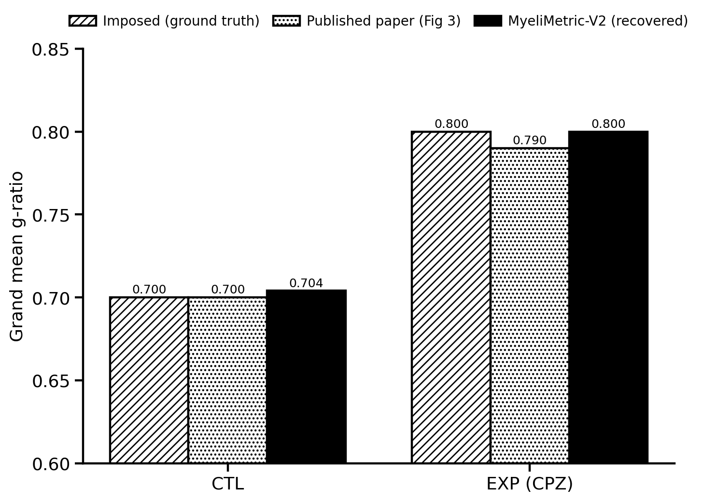
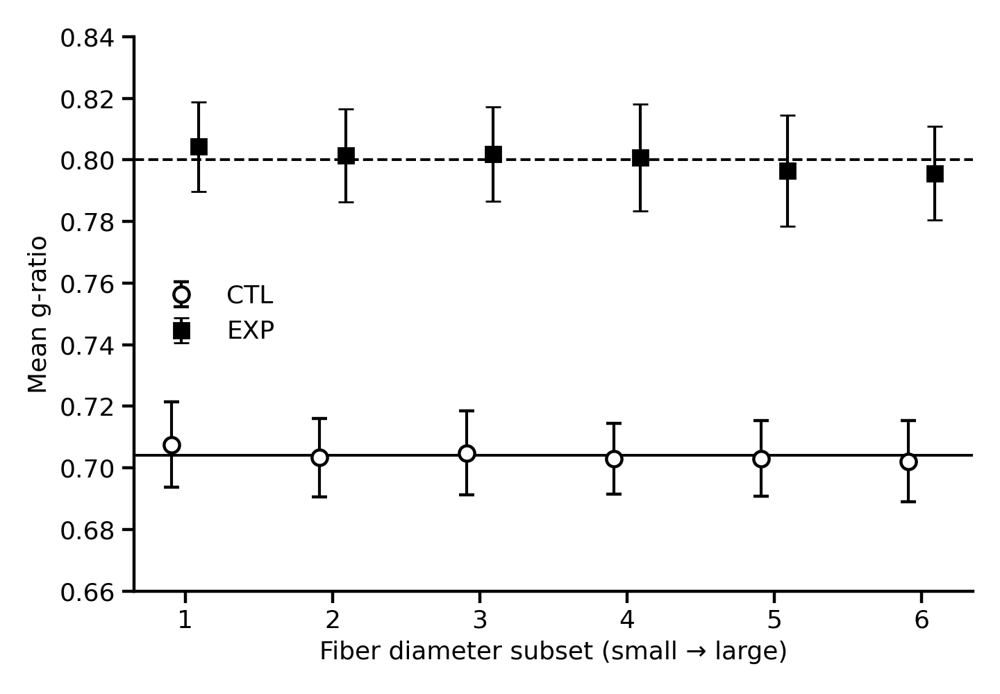
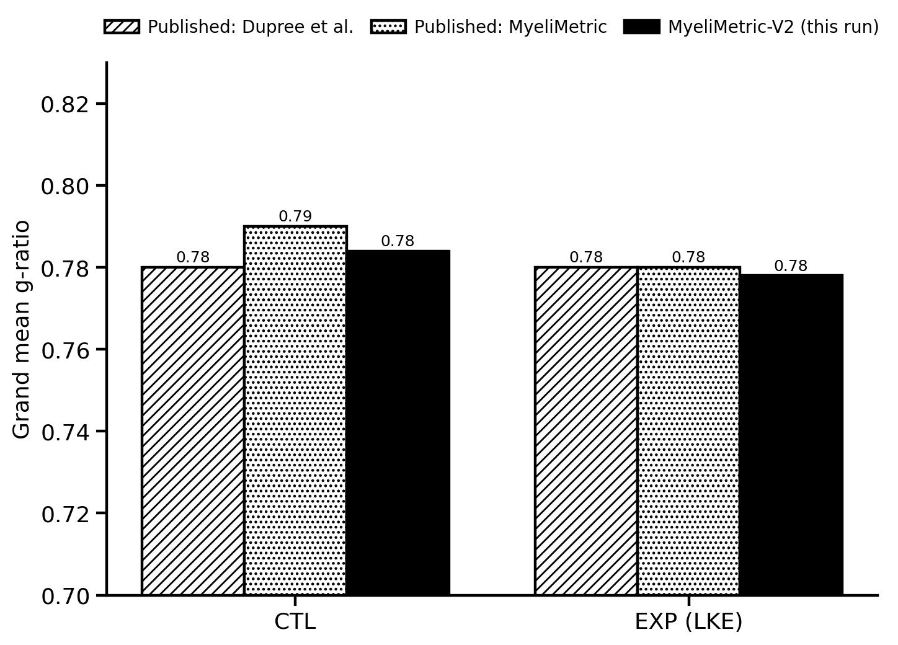
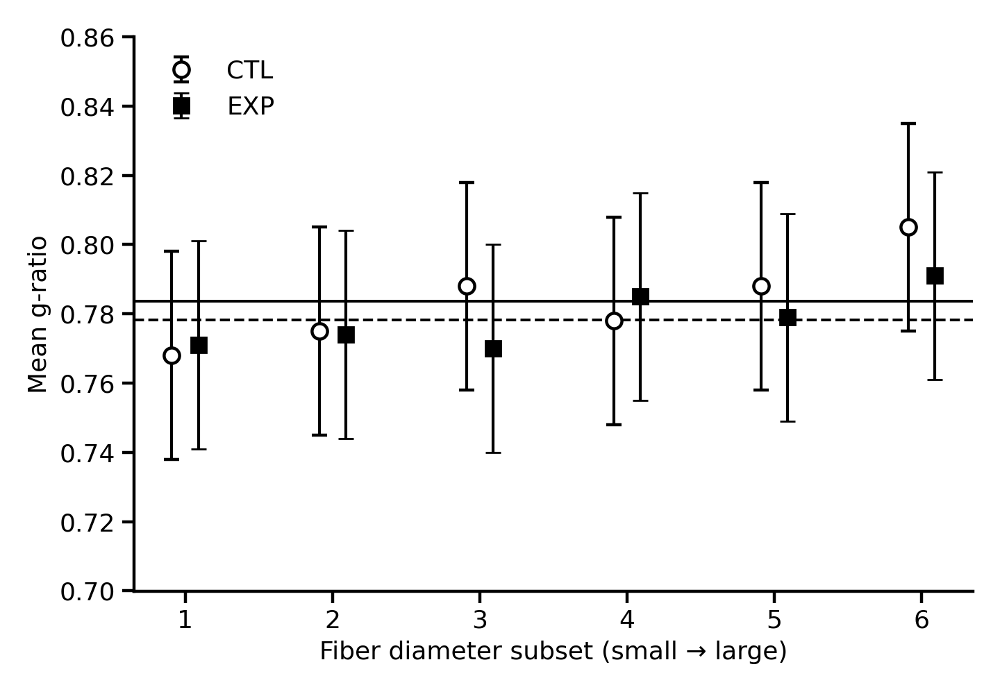
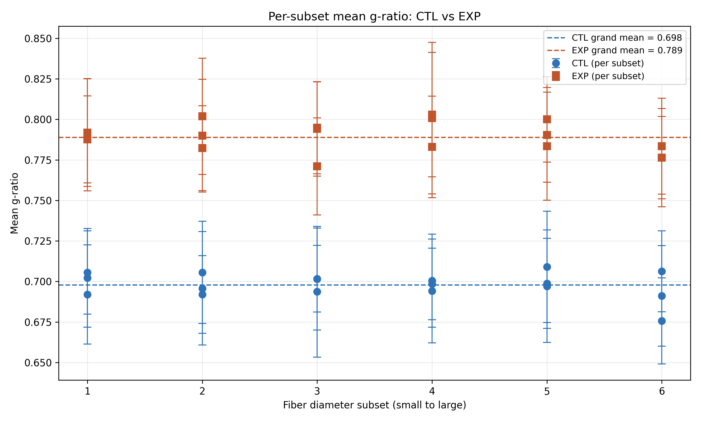
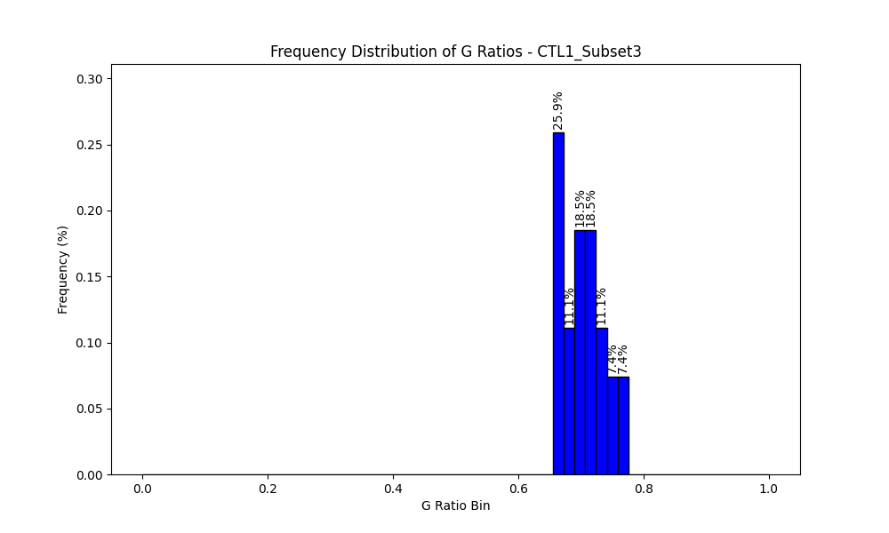
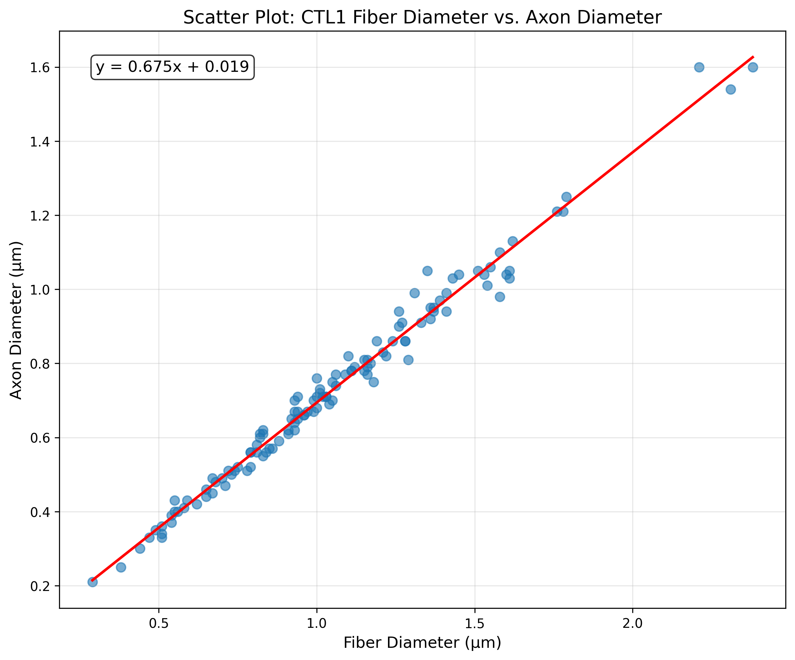
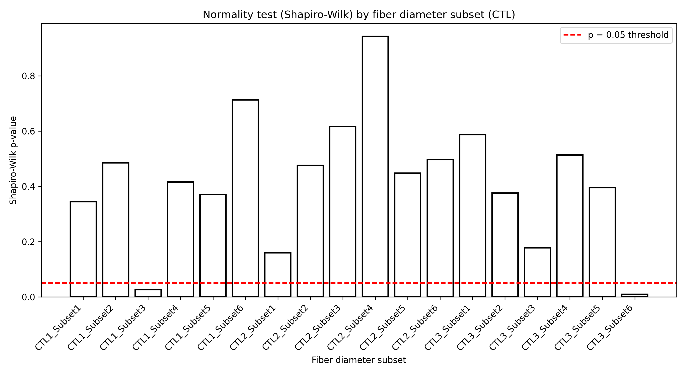

Validation and example output
V2 was checked against known synthetic ground truth, previously published values, and real example inputs. The figures below are the actual validation or application outputs used in the project documentation.
Validation 1: recovery of known synthetic ground truth
A synthetic dataset used imposed g-ratios centered on 0.70 for CTL and 0.80 for EXP. MyeliMetric-V2 recovered grand means of 0.704 and 0.800, respectively. The recovered values are within 0.01 of the imposed values and the published example values.


Validation 2: reproduction of published real-data values
In the real-data comparison documented for V2, MyeliMetric-V2 returned grand mean g-ratios of 0.784 for CTL and 0.778 for the treated EXP group. The documented comparison reports agreement with the corresponding published values to within 0.01.


Example output from the bundled demo files
The website package includes Example_CTL.xlsx and Example_EXP.xlsx. Running them with the default settings produces organized CTL, EXP, and summary outputs.



